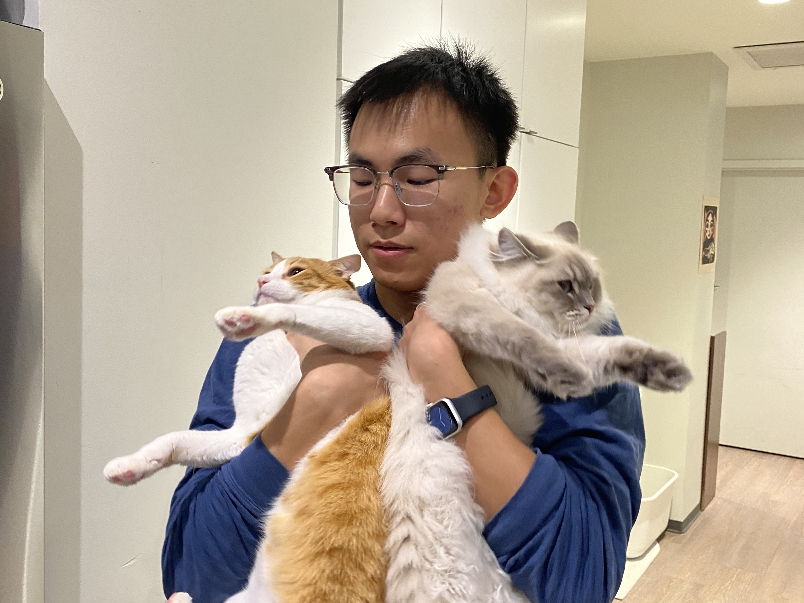

Zhao Dong Fang (b.2002),
currently based in Providence RI
Contact:
Email:tonydfzhao@gmail.com
tel: (401)-574-6957
Instagram
Inquire for complete CV
Traveling through North America, Dongfang Zhao's work is inspired
by the sensibility of light and shadow. Through retrospective drawings,
these moments of mundane are distilled into traces of passing gaze.
By employing spatial and temporal separation, along with process-driven
materials, Zhao continuously folds and challenges the boundaries between
creator and viewer, the present and memory, reality and imagery.
The resulting paintings open up a stage for the audience to share
and explore.